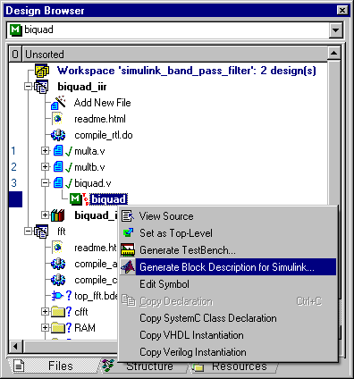
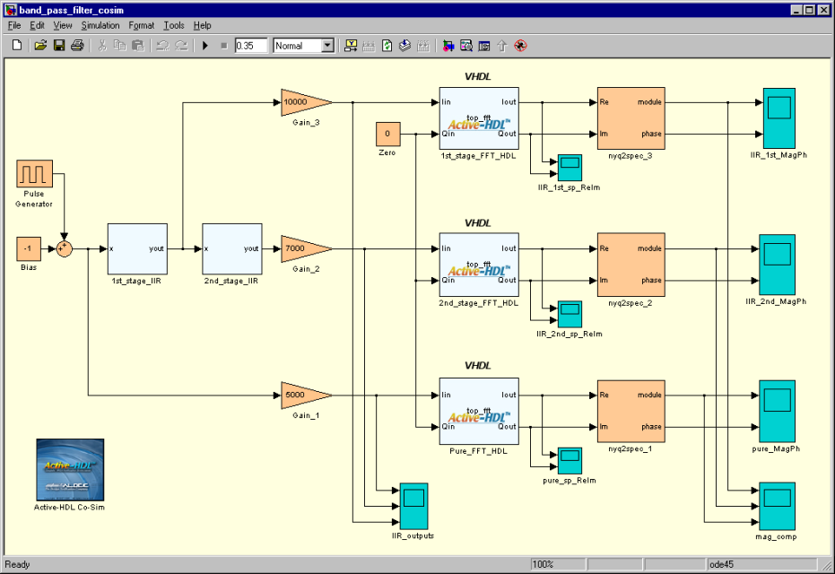
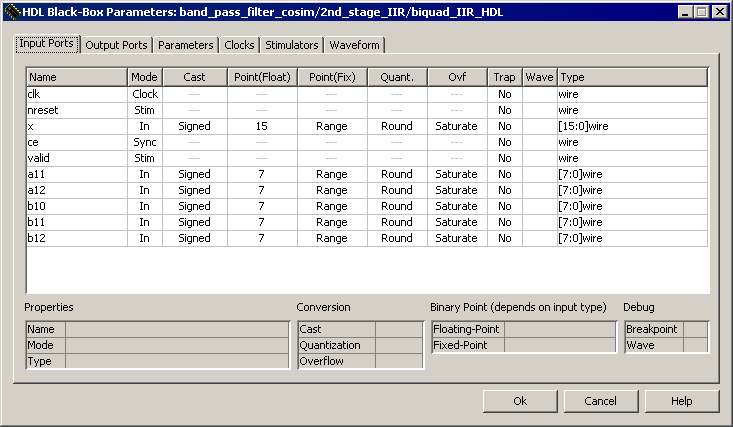
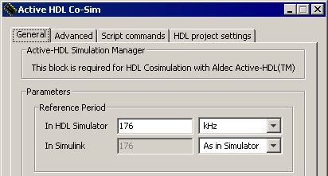
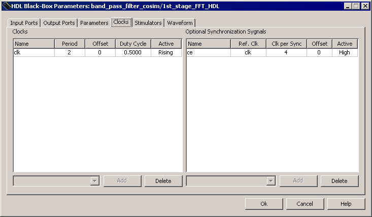
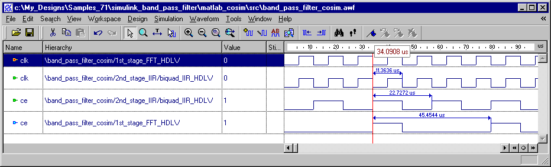
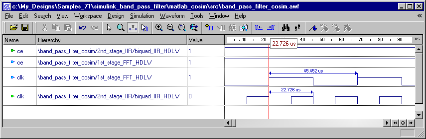

SIMULINK_BAND_PASS_FILTER is simple DSP design using IIR bandpass filter and 1024-point FFT components.
The purpose of this design is to demonstrate the use of Active-HDL Co-Simulation Interface to Simulink® in case of different sampling rates required for different HDL blocks. It shows how to synchronize Simulink sampling with HDL simulator and how to differentiate sampling rates of HDL blocks instantiated in Simulink diagram.
MATLAB® and Simulink® software can be downloaded from the MathWorks website at www.mathworks.com.
The top-level block diagram is created using Simulink block diagram editor. This diagram instantiates black-boxes of the FFT and IIR filters. The FFT design is described in VHDL while the IIR filters are described in Verilog.
The workspace SIMULINK_BAND_PASS_FILTER contains a description of components used in Simulink block diagram. It includes:
This design uses all design entry types available in Active-HDL: State Diagram Editor, Block Diagram Editor and HDL Editor.
The Simulink design is a testbench for two IIR filters and three FFT blocks. There are two band-pass filters. Each of them contains single biquad band-pass section. Three FFT blocks process input, first-stage output and second-stage output signals of bandpass filter.
The filter is stimulated with 1kHz square signal. Two identical IIR filters are designed as Chebyshev bandpass filters with a 44kHz sampling frequency and corner frequencies of 4.5kHz and 5.5kHz, so they pass the 5th harmonic component of source square signal. To have the 5th harmonic in the middle of FFT output spectrum, the whole bandwidth is set to 11kHz, which gives the FFT sampling frequency of 22kHz.
To start co-simulation of this design in Simulink, we need to use Active-HDL to create files that describe our HDL components in Simulink diagram.
First, use the compile_rtl.do macro in the biquad_iir design and compile_all.do in the fft design in order to compile design files and generate block description files for Simulink.
You can also generate block description files for Simulink manually. Select top-level modules (biquad in the biquad_iir design and top_fft in the fft design) and use the Generate Block Description for Simulink option from the pop-up menu for each of the selected top-level modules (Figure 1). Confirm the default file names and locations by pressing OK in the Save As dialog box.

Figure 1. Generating the block description file for co-simulation in Simulink
Once the block description files are created for all modules mentioned above, invoke MATLAB. If you use the co-simulation interface for the first time, browse to the $ALDEC/Simulink folder and type the setup command. (The $ALDEC variable points to the Active-HDL installation folder; you can examine its value using the set command in
Open the $WSP/Simulink/band_pass_filter_cosim.mdl file in the Simulink environment. Make sure that the $WSP/Simulink folder is either set as the current folder or added to the MATLAB search path.
The model contains the Active-HDL Co-Sim block on the top-level diagram, three HDL Black-Boxes corresponding to three instances of the top_fft entity and two subsystems (Figure 2). Each subsystem contains one HDL Black-Box named biquad_IIR_HDL. The name displayed in the middle of the HDL Black-Box symbol corresponds to the configuration filename. By default, it is the name of the entity/module, unless you change it with the Generate Block Description for Simulink option. The HDL Black-Boxes are distinguished graphically with the Active-HDL logo.

Figure 2. The Simulink model window
Now, you can simply start simulation and observe the results on the Simulink scopes. For additional information on how to setup co-simulation, refer to the chapters below.
Push into one of the IIR subsystems and double-click on the biquad_IIR_HDL block. The HDL Black-Box Parameters dialog box (Figure 3.) allows you to control data transfer conditions and check properties of every port. Some of main properties are listed below.
Please refer to the on-line documentation for detailed information on remaining dialog box options.

Figure 3. HDL Black-Box Parameters dialog box (Input Ports tab)
Most of HDL simulators, including Active-HDL, use an event-driven simulation methodology, while Simulink performs cycle-based simulation. This implies a major consequence: data can be exchanged between the two domains only at scheduled time steps. It means that none of HDL Black-Boxes can be evaluated and no data transfer occurs between time points resulting from the specified sampling period. The fixed-step discrete solver also needs to be used in Simulink to provide correct co-simulation results.
The sampling period and the relationship between Active-HDL and Simulink time domains is defined in the

Figure 4: Reference Period Settings
The Reference Period section defines base sampling rate for all HDL Black-Boxes. The HDL Black-Box Parameters dialog box allows setting the following timing parameters of an individual HDL Black-Box:
All parameters specifying the time are defined as integers related to the Reference Period.
As mentioned before, we want to simulate blocks with two different sampling frequencies. The FFT runs with 22kHz, which gives the period of 45.45us, while IIR runs with 44kHz, which gives the period of 22.73us, twice shorter than FFT period. The resulting maximum clock period is 22.73us and, consequently, possible reference periods are: 11.36us, 7.58us 5.68us, 4.55us, 3.79us, 3,25us 2.84us and so on. The corresponding frequencies of 88kHz, 132kHz, 176kHz, 220kHz, 264kHz, 308kHz, 352kHz, etc. also can be used in the Reference Period section.
NOTE: Be aware of the round-off error when specifying a period by using frequency units. The fractional part of the resulting period will be rounded to three digits.
Differentiating the sampling period can be accomplished in two ways: by using one clock frequency for all HDL Black-Boxes and additional synchronization signals to activate block, or by using multiple clock frequencies directly.
In order to use this method of synchronization, a module must be equipped with an additional input enabling its operation (e.g. by gating the clock input.) Both entities used in this example have the CE port gating the CLK input, which can be used for synchronization purposes.
The maximum clock period of 22.73us (44kHz) implies the maximum reference period of 11.36us. If we use this value, then the IIR blocks will be activated on each clock while FFT will be enabled on every second clock. For presentation purposes, we will set a smaller value of the base sampling period than maximum required. We will specify 5.68us, corresponding to 176kHz. The IIR blocks will be enabled every second clock while the FFT blocks – every fourth clock.
You can examine the Reference Period setting in the Block Parameters of the Active-HDL Co-Sim block as shown in Figure 4. Since we don't need to differentiate the timescales, the As In Simulator option is used for the Simulink sample period.
Figure 5. shows the HDL Black-Box Parameters of one of the FFT blocks:

Figure 5. Clocks settings for one of the FFT blocks
In case of IIR blocks, the corresponding settings will be specified as follows:
Switch to the Waveform tab of the HDL Black-Box Parameters dialog box to select the clk and ce ports to be displayed in the Active-HDL Waveform Viewer.
This is indicated in the Wave column of Input Ports and Output Ports tabs (Figure 3.) This way you can verify if these ports are stimulated correctly.
Figure 6. presents dependencies of the Sync and Clock signals. The clk signal has the same period of 11.36us (88kHz) for all blocks, the ce signals enable the IIR blocks every 22.73us (44kHz) and the FFT blocks every 45.45us (22kHz).

Figure 6. Dependencies of the Clock and Sync signals for the single-clock frequency
When the design constraints allow the use of multiple clock frequencies, you can specify the desired clock frequency directly in the HDL Black Box Parameters. Let's assume that we will use following settings:
If the modules have additional enabling signals, they can be forced in one of the following ways:
The dependencies between the clk and Sync signals (in case the first method is used) are shown in Figure 7. The clock period for the IIR blocks is set to 22.73us (44kHz) and for the FFT blocks - 45.45us (22kHz).

Figure 7. Dependencies of the Clock and Sync signals for the multiple-clock frequencies
For further information on the Active-HDL Co-Simulation Interface to Simulink, refer to the Active-HDL on-line documentation.
The FFT and Biquad_IIR opencores have been downloaded from www.opencores.org. Refer to this site for copyright notices.